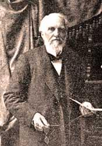
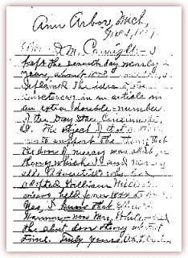

Crosier letter to Canright in 1848
O. R. L. (Owen Russell Loomis) Crosier 1820-1913.
Crosier writes a letter to Elder D. M. Canright, dated December 1, 1848. Crosier explains that he and nearly all Adventists including Ellen G. White believed in the shut door from 1844-1848. Ellen G. White claimed after 1844 she gave up the belief in the shut door. Then the Lord showed her in vision she was in error, which means she went back to her former belief that the door of mercy was closed to the world. Adventist leaders were writing articles and denying that Ellen believed in the shut door after 1844. Crosier's letter provided Elder Canright the proof he was looking for to show the Adventist leaders of their untruthfulness.

This Ellen G. White letter was discovered in 1980. It had been kept secret by the White Estate. This letter was quoted from in part by Adventists apologists, but the full letter was never released to the public for obvious reasons. Ellen's letter was addressed to Joseph Bates dated July 13, 1847 says, " …Many of them did not believe in the shut door. I suffered much at the commencement of the meeting. Unbelief seemed to be on every hand." "Most of them received the vision and was settled on the shut door." The shut door in this point in time meant the door of mercy was closed to the world except for those that accepted Millers false prophecy. Later the shut door came to mean the door between the holy and the most holy was closed in 1844, which is another false teaching. Crosier's letter is typed out as it is difficult to read the handwriting in the scanned image (right).
Ann Arbor, Mich.
Dec. 1, 1887
Elder D. M. Canright: —I kept the seventh day nearly a year, about 1848. In 1846, I explained the idea of the sanctuary in an article in an extra double number of the Day Star, Cincinnati, O. The object of that article was to support the theory that the door of mercy was shut, a theory which I and nearly all Adventists who had adopted William Miller's views, held from 1844 to 1848. Yes, I know that Ellen G. Harmon—now Mrs. White—held the shut door theory at that time. Truly yours, O.R.L. Crosier
Crosier Renounces the Shut Door
Robert K. Sanders, Founder and Editor of Truth or Fables, 1997–2012
Life Assurance Ministries assumed ownership of Truth or Fables in 2012
© 2016 Life Assurance Ministries. All rights reserved.
New and Important
- Ellen G. White and the Chicago Buildings Vision Fiascoby Kerry B. Wynne: Ellen White's Chicago Buildings Vision was her most spectacular prophetic blunder. [PDF]
- Doctors Bacchiocchi, MacCarty, and DuPreez Wreak Havoc With the Sabbath and Ellen Whiteby Kerry Wynne, William Hohmann, Robert K. Sanders: This book is for those who wish to study the anti-Sabbatarian content of the New Testament as a supplement to our other three books. [PDF]
Other Important Online Materials
- A Critic Answers Uncomfortable Questions by William Hohmann: New August 1, 2012—Response to the challenge on The Adventist Defense League Blog Site [PDF]
- Sabbath Not A Law For Christians: Answers many arguments Sabbath keepers make
- Is the SDA Church a Cult? The Clear Word Bibleby Robert K. Sanders [PDF]